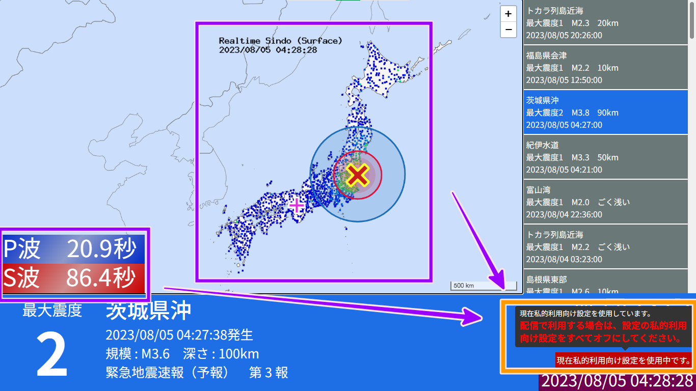

また、このため使用している方は一度リロードしていただきますようお願い致します。
http://korakuji.starfree.jp/yumin/quakeviewer/
以下の点を更新しました。
-
防災科学技術研究所からのJSONデータの受信を停止しました。
更新理由- 私的利用以外での著作物の複製は著作権法に違反するため。
- 緊急地震速報の予報・警報の区別が不明になります。
- 受信した緊急地震速報は現在はすべて予報として処理しています。
-
強震モニタ画像に重なっていたオブジェクトを削除しました。
更新理由- 著作物を改変すると引用に当たらなくなるため。
- 私的利用以外での著作物の改変は著作権法に違反するため。
- 強震モニタ画像上の沖縄地方の観測点が海の上に表示されています。
- 私的利用する場合のみ強震モニタ画像に重なっていたオブジェクトを追加（著作物の改変）し、海の上の観測点を削除します。
-
私的利用向け設定を使用している場合、右下に「私的利用向け設定を使用中」の表示を追加しました。

更新理由
- 私的利用向け設定の使用中に間違えて配信に組み込まないようにするため。
- 私的利用向け設定の使用中であることをわかりやすくするため。
- 影響点はありません。
- 代替策はありません。